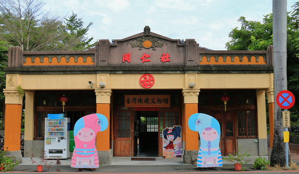
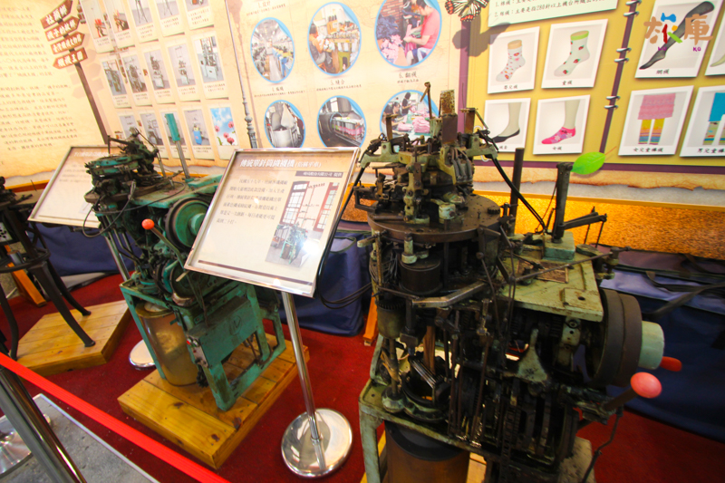

同仁社
社頭同仁社位於臺灣彰化縣社頭鄉的社頭車站旁，是一間經營鐵路運輸業務的公司，在臺灣的公路運輸興起後沒落，同仁社辦公室建築已於民國91年（2002年）11月20日公告為歷史建築。
同仁社面寬三開間，為磚木混合建築，屋頂桁架是使用福州杉製成，屋頂兩端有正吻脊瓦裝飾。其正面水平臥樑是使用鋼筋混擬土製成，而正面與兩側皆有山牆，其中正面山牆寫著「同仁社」，側面則寫「同仁社運輸組」

目前是由彰化縣社頭織襪產業發展協會進駐作為文物館，裡面有數種各時期的織襪製作機器，現場還有工作人員的導覽介紹，其中更引進優良的織襪廠商提供襪子DIY教學以及優質的織襪產品，可說是社頭相當具有代表性的文物館。
| 門票 | 免費參觀 | |
| 地址 | 彰化縣社頭鄉社斗路6號 | |
| 電話 | 04-8733990 | |
| 參觀時間 | 8:30~5:30 |